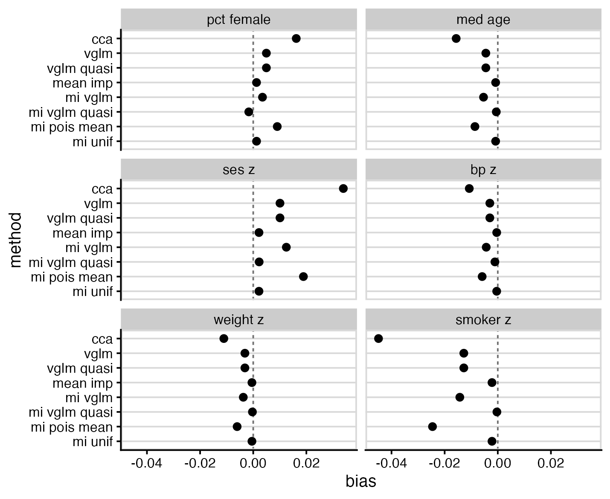
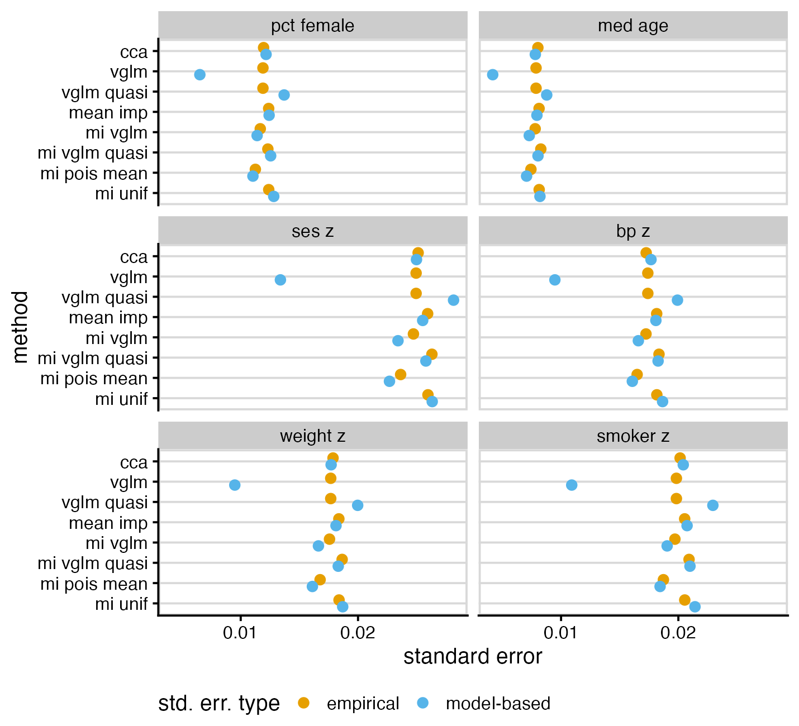
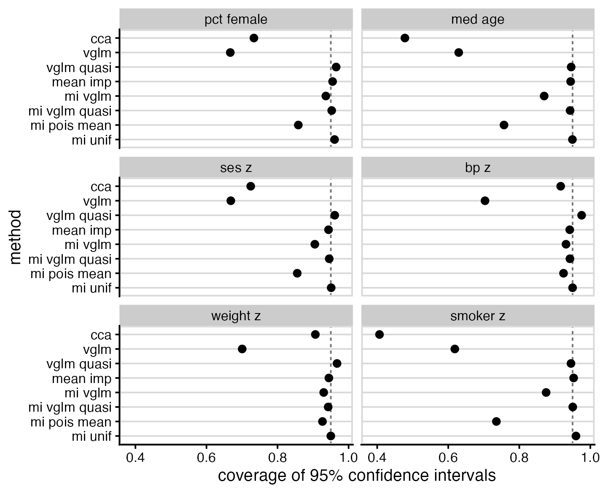
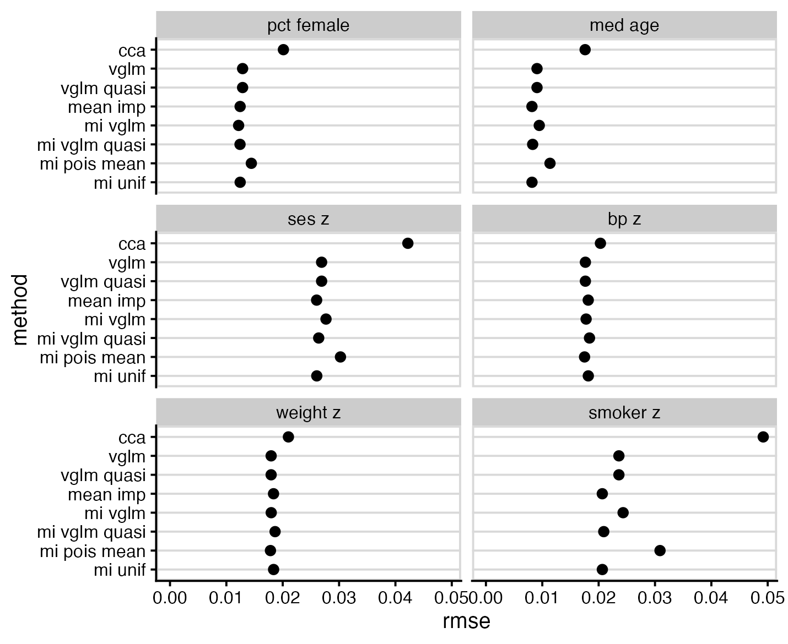

# left-censored poisson imputation
mice.impute.lcpoisson <-
function(y, ry, x, type, wy = NULL,
left_cens, offset = NULL, ...) {
# default: impute values to which the model is not fitted
if (is.null(wy)) {
wy <- !ry
}
# fit left-censored Poisson regression
# (adapted from countimp::mice.impute.poisson)
offset_var <- names(type[type == -1])
y[!ry] <- left_cens
yy <- SurvS4(y, as.numeric(ry), type = "left")
if (is.null(offset)) {
fit <- vglm(yy ~ 0 + x, family = cens.poisson())
} else {
fit <- vglm(yy ~ 0 + x, offset = x[, offset_var],
family = cens.poisson())
}
fit.sum <- summary.vglm(fit)
beta <- coef(fit)
# sample from posterior distribution of parameters
# (adapted from countimp::mice.impute.poisson)
rv <- t(chol(fit.sum@cov.unscaled))
beta.star <- beta + rv %*% rnorm(ncol(rv))
# predicted mean for each row to impute
p <- as.vector(exp((x[wy, , drop = FALSE] %*% beta.star)))
## sample from truncated Poisson distributions
# first obtain probability mass function
interval <- 0:(left_cens - 1)
pmf <- matrix(
dpois(rep(interval, each = length(p)),
rep(p, times = length(interval))),
nrow = length(p),
ncol = length(interval)
)
# sample from interval using our pmf
imp <- apply(pmf, 1, \(prob) sample(interval, 1, prob = prob))
return(imp)
}Introduction
Official statistics often publish tables with small counts omitted, out of concern for privacy. For example, an entry may be “< 5” instead of containing an actual number. Most missing data methods won’t work well here, because the values aren’t missing at random (MAR) in the usual sense: we know the missing value is less than five, and all values less than five are missing.
For more on this, see this helpful blog post by Peter Ellis over on Free Range Stats: Suppressed data (left-censored counts)
In short: substituting a value in the middle of the censored range works well in practice. Left-censored outcome models (using, e.g., the VGAM package) work well. Complete case analysis and standard multiple imputation both perform poorly and should be avoided.
That post focussed on using the counts as an outcome. However, counts can also be predictors in other models, or used as the input for further processes. To give the example which motivated this effort originally, crude death counts are an input required to calculate standardised mortality ratios. In that case, using a left-censored outcome model is not an option.
Another common characteristic of count data is that they are overdispersed, i.e., have a variance greater than would be predicted by a Poisson distribution. We will see that this is important to consider when modelling left-censored counts, too.
Using mice to impute left-censored counts
Here’s a mice imputation method for suppressed counts, which fits a left-censored Poisson regression model using VGAM::vglm(), then samples from its posterior distribution. This lets us obtain values for the censored counts, which can then be used e.g. as predictors in other models.
To use it, call mice() with method = "lcpoisson" (or put lcpoisson in the method vector for the variables you want to use it for), and add a left_cens = parameter to lowest non-censored value.
Bonus feature: if you set a variable’s entry in the predictor matrix to -1, it will be used as an offset term, with coefficient forced to 1. Useful if you have a known total population for each observation and are interested in modelling rate ratios, for example.
Count data are often overdispersed, so here’s a version that uses quasi-Poisson regression instead. Use it by setting method = "lcquasipoisson". Note that this doesn’t work perfectly, because the censoring mechanism doesn’t properly incorporate the overdispersion, it’s just used to scale the standard errors after fitting the model. Imputed data are drawn from a negative binomial distribution with parameters set to match the estimated overdispersion from the quasi-Poisson model. This should still be better than complete ignoring overdispersion.
# left-censored quasipoisson imputation
mice.impute.lcquasipoisson <-
function(y, ry, x, type, wy = NULL,
left_cens, offset = NULL, ...) {
# default: impute values to which the model is not fitted
if (is.null(wy)) {
wy <- !ry
}
# fit left-censored Poisson regression
# (adapted from countimp::mice.impute.poisson)
offset_var <- names(type[type == -1])
y[!ry] <- left_cens
yy <- SurvS4(y, as.numeric(ry), type = "left")
if (is.null(offset)) {
fit <- vglm(yy ~ 0 + x, family = cens.poisson())
} else {
fit <- vglm(yy ~ 0 + x, offset = x[, offset_var],
family = cens.poisson())
}
fit.sum <- summary.vglm(fit)
beta <- coef(fit)
dispersion <- sum(residuals(fit, "pearson")^2) / fit@df.residual
# sample from posterior distribution of parameters. we ignore
# uncertainty in the estimate of overdispersion.
# (wotcha gonna do about it.)
rv <- t(chol(dispersion * fit.sum@cov.unscaled))
beta.star <- beta + rv %*% rnorm(ncol(rv))
# predicted mean for each row to impute
p <- as.vector(exp((x[wy, , drop = FALSE] %*% beta.star)))
phi <- p / (dispersion - 1)
## sample from truncated negative binomial distribution
# first obtain probability mass function
interval <- 0:(left_cens - 1)
pmf <- matrix(
dnbinom(x = rep(interval, each = length(p)),
mu = rep(p, times = length(interval)),
size = rep(phi, times = length(interval))),
nrow = length(p),
ncol = length(interval)
)
# sample from interval using our pmf
imp <- apply(pmf, 1, \(prob) sample(interval, 1, prob = prob))
return(imp)
}Other imputation methods for comparison
These are verbatim from Peter Ellis’s blog. The desuppress method imputes using an intercept-only Poisson model, and uniform imputes using a uniform distribution over the missing values. I would expect the first method to perform poorly if there are good predictors of missing values. In principle, uniform should show the same bias as just setting missing values to centre of the censored range, but with better standard errors, since it propagates uncertainty in the censored values.
#' Imputation function for suppressed data for use with mice - Poisson-based
#'
#' @param y vector to be imputed
#' @param ry logical vector of observed (TRUE) and missing (FALSE) values of y
#' @param x design matrix. Ignored but is probably needed for mice to use.
#' @param wy vector that is TRUE where imputations are created for y. Not
#' sure when this is different to just !ry (which is the default).
mice.impute.desuppress <- function (y, ry, x, wy = NULL, max_value = 5, ...) {
# during dev:
# y <- data$censored_count_num; ry <- !is.na(y)
if (is.null(wy)){
wy <- !ry
}
# What are the relative chances of getting values from 0 to the maximum
# allowed value, if we have a Poisson distribution which we have estimated
# the mean of via trimmed mean? (this is very approximate but probably better
# than just giving equal chances to 0:5)
probs <- dpois(0:max_value, mean(y[ry], tr = 0.2))
return(sample(0:max_value, sum(wy), prob = probs, replace = TRUE))
}
#' Imputation function for suppressed data for use with mice - simple
#'
mice.impute.uniform <- function (y, ry, x, wy = NULL, max_value = 5, ...) {
return(sample(0:max_value, sum(wy), replace = TRUE))
}Simulation study design
The primary goal of this simulation was to determine whether or not the lcpoisson imputation method (code shown earlier) recovers a distribution consistent with the original data generating process. A secondary goal was to compare other suggested methods for analysing left-censored counts.
Data generating process
The structure of the simulated data was chosen to resemble real public health data on cardiovascular mortality across geographic areas. The predictors, outcomes, and their relationships are based broadly on publicly available health data in Australia from AIHW and PHIDU. The simulated datasets all had a sample size of 1000 observations.
The simulated variables are as follows:
pop: population of the statistical area (median: approx 8000)pct_female: percentage of female residentsmed_age: median ageses_z: relative socioeconomic status (continuous)bp_z: relative prevalence of high blood pressure (continuous)weight_z: relative prevalence of obesity (continuous)smoker_z: relative prevalence of smokers (continuous)deaths: annual deaths due to cardiovascular diseasedeaths_cens: left-censored version ofdeaths, with missing data introduced ifdeaths <= 5. Approximately 31% of the observations were censored.
To ensure Monte Carlo error was well controlled, 2000 simulated datasets were created, sufficient to ensure ±1% margin of error for confidence interval coverage.
The code to generate the simulated data is shown below:
simulate_data <- function(n = 1000, seed = NA) {
if (!is.na(seed)) {
set.seed(seed)
}
tibble(
id = 1:n,
log_pop = rnorm(n, 8.8, 0.5),
pop = round(exp(log_pop)),
ses_z = rnorm(n, 0, 1),
med_age = rnorm(n, 35 + 0.9*ses_z, 3),
pct_female = rnorm(n, 50 + 0.1*(med_age-35) + 0.6*ses_z, 1.5),
smoker_z = rnorm(n, -0.85*ses_z, 1),
weight_z = rnorm(n, 0.12*(med_age-35) - 0.15*(pct_female-50) -
0.55*smoker_z, 1),
bp_z = rnorm(n, -0.25*(med_age-35) - 0.05*(pct_female-50) - 0.1*ses_z +
0.1*smoker_z + 0.05*weight_z, 1),
log_mu = -6.5 + log_pop + 0.07*(med_age-35) - 0.07*(pct_female-50) -
0.15*ses_z + 0.05*bp_z + 0.05*weight_z + 0.2*smoker_z,
mu = exp(log_mu),
deaths = rnbinom(n, mu = mu, size = mu/3), # somewhat overdispersed...
deaths_cens = case_when(
deaths > 5 ~ deaths,
TRUE ~ NA
),
deaths_mean_imp = replace_na(deaths_cens, 2.5),
)
}Analysis methods to compare
The following methods for handling censored data are considered here:
full: Analysis of the full (non-censored) data using a quasi-Poisson model was performed as a check that the data generation process and analysis models were working as expected, but not presented in the results belowcca: Complete case analysis. Censored observations are removed, then a quasi-Poisson model was fit to the remaining datavglm: Left-censored Poisson regression using theVGAMpackagevglm quasi: Left-censored quasi-Poisson regression. This was implemented by fitting a Poisson regression using theVGAMpackage, then inflating standard errors based on estimated overdispersionmean imp: Mean imputation. Censored observations are replaced by 2.5, the mean of the values they could possibly take, then a quasi-Poisson model was fit to the data.mi vglm: Multiple imputation using left-censored Poisson regression, followed by a quasi-Poisson model fit to the imputed datami vglm quasi: Multiple imputation using left-censored quasi-Poisson regression, followed by a quasi-Poisson model fit to the imputed datami pois mean: Multiple imputation using an intercept-only Poisson distribution (as demonstrated by Peter Ellis previously), followed by a quasi-Poisson model fit to the imputed datami unif: Multiple imputation using a uniform distribution, followed by a quasi-Poisson model fit to the imputed data
Estimands
The estimands of interest are the coefficients of the (quasi-)Poisson regression model used to generate the simulated data:
deaths ~ offset(log(pop)) + pct_female + med_age + ses_z + bp_z + weight_z + smoker_z
The true values of these parameters are shown below:
| Model parameter | True value |
|---|---|
| (Intercept) | -5.45 |
| pct female | -0.07 |
| med age | 0.07 |
| ses z | -0.15 |
| bp z | 0.05 |
| weight z | 0.05 |
| smoker z | 0.20 |
Performance measures
Methods were evaluated in terms of bias, empirical and model-based standard error, coverage of nominal 95% confidence intervals, and root-mean-square error.
Results
As expected, complete case analysis (cca) was biased for all parameters, and showed more bias than any alternative method. The best performers were mean imputation (mean imp), multiple imputation using left-censored quasi-Poisson (mi vglm quasi), and multiple imputation using a uniform distribution (mi unif).

Most methods demonstrated model-based standard errors similar to their empirical standard errors, with notable exceptions of left-censored Poisson (vglm), which had falsely low standard errors, and left-censored quasi-Poisson (vglm quasi), which had falsely high standard errors. Two of the multiple imputation methods, mi vglm and mi pois mean, and displayed standard errors lower than that of the full data model; this combination of bias and low standard error may make them problematic in practice.

The worst performers for interval coverage were left-censored Poisson (vglm), likely due to it not accounting for overdispersion, and cca, likely due to bias. The best performers were the same as the best performers for bias: mean imp, mi vglm quasi and mi unif.

RMS error shows notably poor performance of CCA, but is otherwise not particularly interesting.

Discussion
Based on the above results, my recommendations are:
- Complete case analysis was a consistently bad performer and should not be used in this context
- Replacing censored values by half the censoring point (
mean imp) is simple to implement and performed remarkably well - Left-censored Poisson models (
vglm) seem appealing, but by not allowing for overdispersion, perform poorly in practice unless the only interest is in point estimates. An attempt to fix this by inflating standard errors using estimated overdispersion (vglm quasi) was less successful than hoped. - If multiple imputation is to be used, consider either the left censored quasi-Poisson (
mi vglm quasi, selected inmiceusingmethod = "lcquasipoisson") or uniform (mi unif, selected inmiceusingmethod = "uniform")
Code availability
The full code for this simulation can be found on GitHub: https://github.com/cmrnp/cameronp-quarto-blog/tree/master/post/2026/impute-left-censored-counts/